Compiled app, synthetic pool data, captured through the shared Windows Chrome browser at desktop and mobile widths. Click a capture to view it at full size.
The sticky header now uses an opaque theme background without a backdrop blur or saturation filter. Dates and percentages reuse locale formatters across live updates and chart redraws.
Formatting benchmark: 250 timestamp/percentage pairs, median 11.3 ms → 0.3 ms in Windows Chrome. This measures formatting only; scroll latency on the original Firefox setup still requires a follow-up recording.
Checks: 33 frontend tests, full production build, mobile navigation, chart ranges, English/French/Arabic formatting, dark theme scrolling and page-download recovery. Eighteen current captures use synthetic data.
Source hashes and measurements
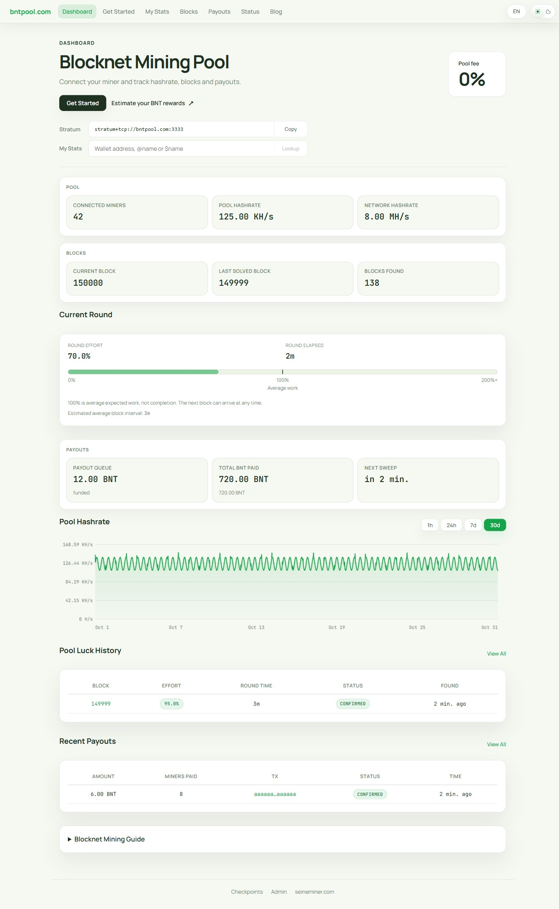
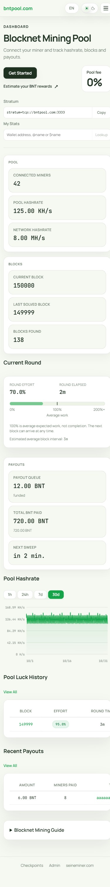
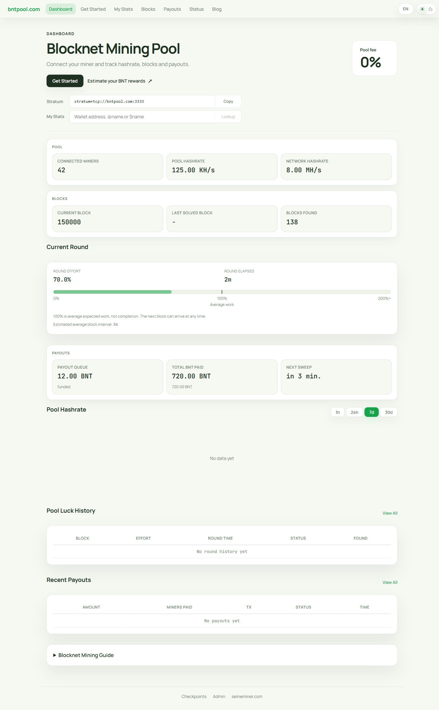
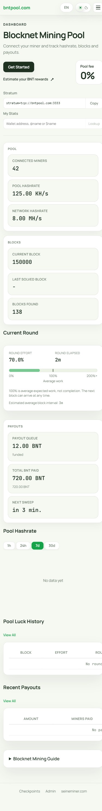
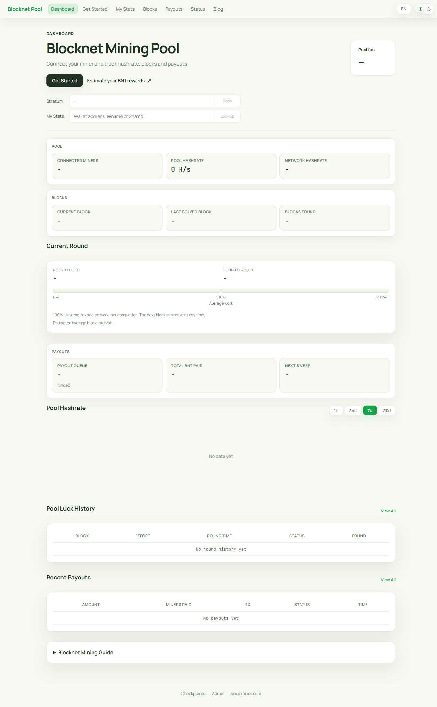
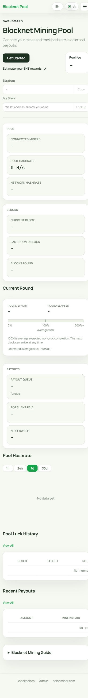
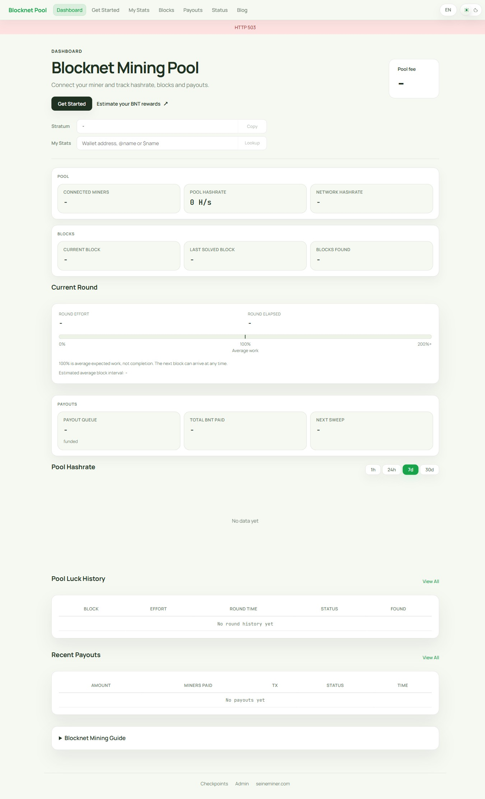
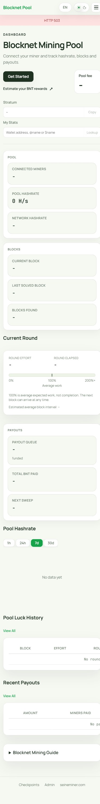
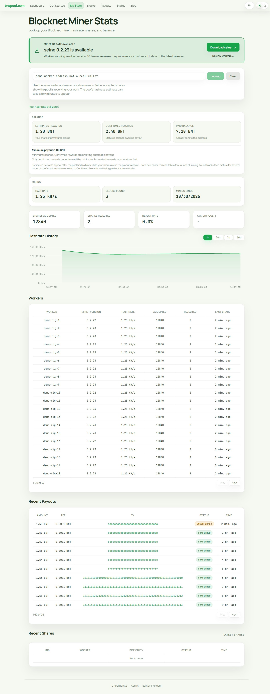
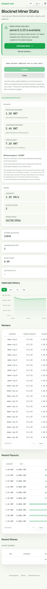
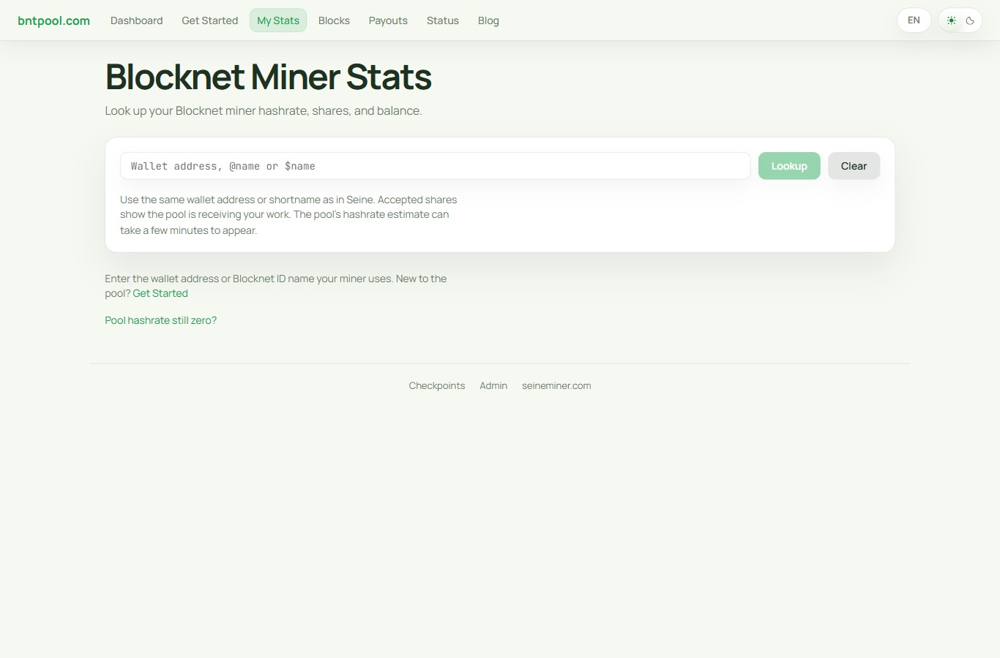
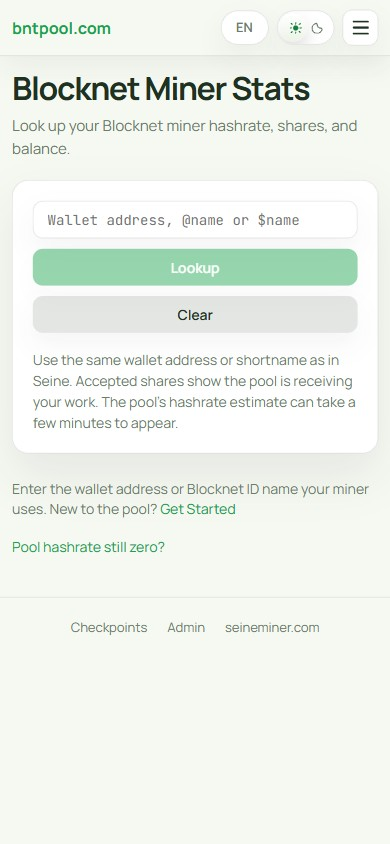
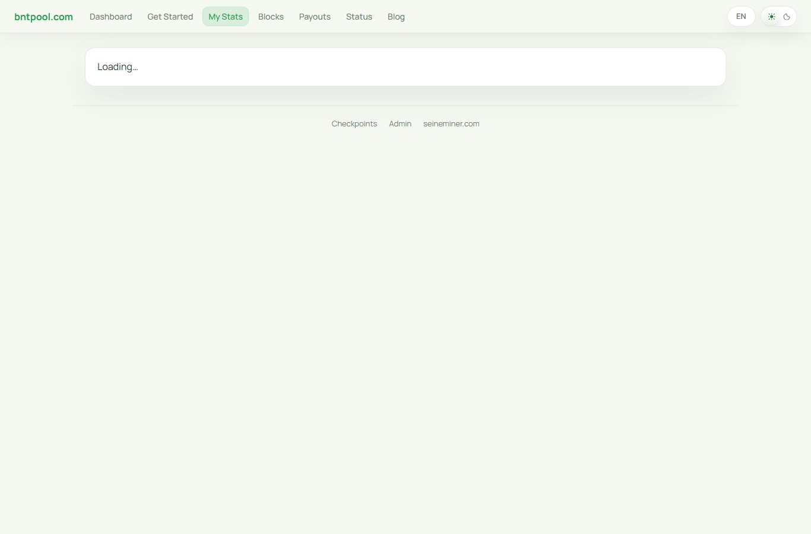
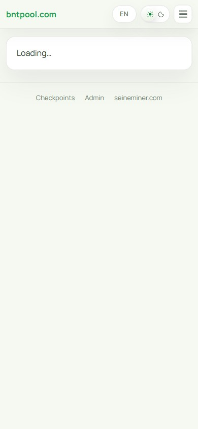
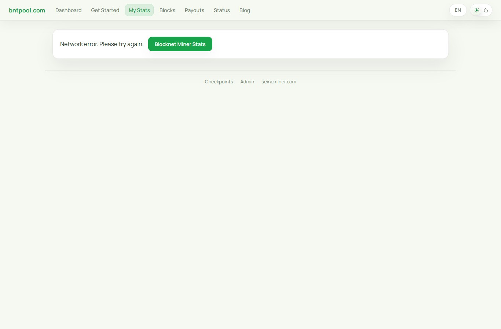
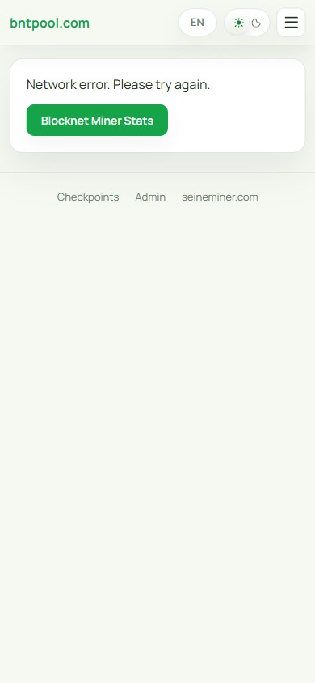
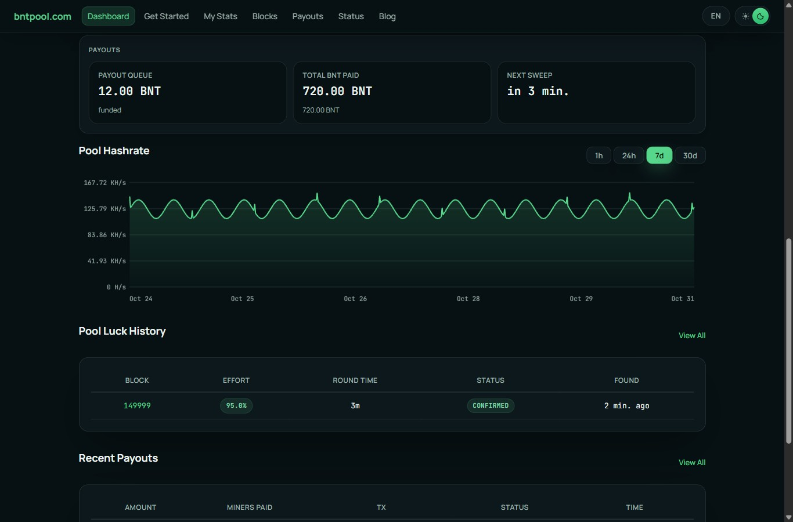
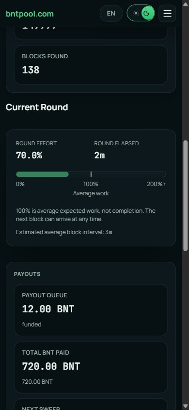